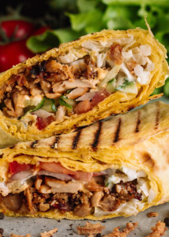
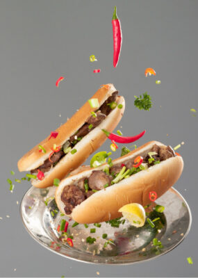

Zeit W Lamoon
Discover Egypt through the eyes of Zeit W Lamoon, the Dubai based destination to culinary taste sensation. Established 2021, Zeit W Lamoon means ‘Oil and lemon’ which is an authentic Egyptian mixture to spice up the “Fava Beans” dish, also known as “Foul Medammes”, and the primary element to Egyptian street food.

